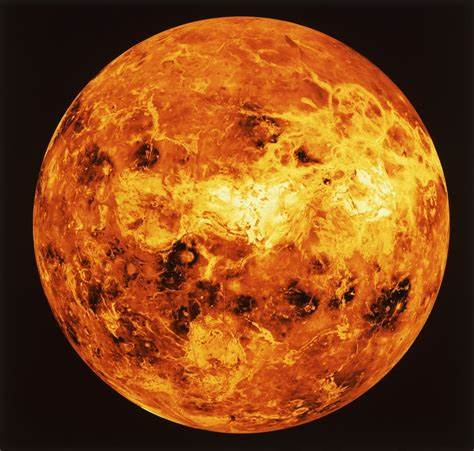

| Planeta | Diametro | Perido de rotacion (Dias) | Imagen |
|---|---|---|---|
| Mercurio | 4,878.00 | 58,667 |
|
| Venus | 12,100.00 | 243 |
 |
| Tierra | 12,756.00 | 1,00 |
|
| Marte | 6,787.00 | 1,03 |
|
| Jupiter | 142,984.00 | 0,414 |
|
| Saturno | 120,536.00 | 0,426 |
|
| Urano | 51,108.00 | 0,718 |
|
| Neptuno | 49,538.00 | 0,6745 |
|